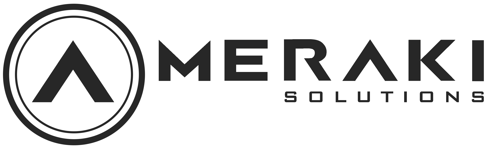

<div class="animated fadeIn delay-4 slower">
    <mat-sidenav-container style="height:100vh">
        <mat-sidenav mode="over" #sideMenu [(opened)]="openedMenu" *ngIf="user$ | async as user"
            class="mat-elevation-z8 main__sidenav">
            <div class="user ">
                <div>
                    
                    <ng-template #defaultPicture>
                        
                    </ng-template>
                </div>
                <div class="user__name">
                    {{user.displayName}}
                </div>
            </div>
            <div class="w3-center">
                <mat-slide-toggle [(ngModel)]="isDark" color="primary" (click)="dbs.toggleDark(!isDark)">
                    Modo Oscuro
                </mat-slide-toggle>
            </div>
            <mat-expansion-panel *ngIf="user?.admin" class="w3-margin-top main__panel" style="box-shadow: none;">
                <mat-expansion-panel-header>
                    <mat-panel-title>
                        <mat-icon class="menu__icon">color_lens</mat-icon>
                        <span>Editar Colores</span>
                    </mat-panel-title>
                </mat-expansion-panel-header>
                <form [formGroup]="themeFormGroup" *ngIf="themeFormGroup$ | async" class="ms-flex w3-center w3-padding">
                    <mat-form-field color="primary" appearance="outline">
                        <mat-label>Color Primario</mat-label>
                        <mat-select formControlName="primary"  [compareWith]="compareObjects">
                            <mat-option *ngFor="let food of themesSelection" [value]="food">
                                {{food.name |titlecase}}
                            </mat-option>
                        </mat-select>
                    </mat-form-field>
                    <mat-form-field color="accent" appearance="outline">
                        <mat-label>Color Secundario</mat-label>
                        <mat-select formControlName="accent"  [compareWith]="compareObjects">
                            <mat-option *ngFor="let food of themesSelection" [value]="food">
                                {{food.name |titlecase}}
                            </mat-option>
                        </mat-select>
                    </mat-form-field>
                </form>
            </mat-expansion-panel>
            <h2 class="menu__title font--primary">menu</h2>
            <div class="menu">
                <button mat-button *ngIf="user?.admin" class="w3-block menu__button" routerLink="configuracion"
                    (click)="toggleSideMenu()">
                    <mat-icon class="menu__icon">settings</mat-icon>
                    <span>Configuración</span>
                </button>
                <button *ngIf="user?.admin" mat-button class="w3-block menu__button" routerLink="product-configuration"
                    (click)="toggleSideMenu()">
                    <span style="width: 20px;"></span>
                    <mat-icon class="menu__icon">local_offer</mat-icon>
                    <span>Lista de productos</span>
                </button>
                <button *ngIf="user?.admin" mat-button class="w3-block menu__button" routerLink="ventas"
                    (click)="toggleSideMenu()">
                    <mat-icon class="menu__icon">assignment</mat-icon>
                    <span>Ventas</span>
                </button>
                <button *ngIf="user?.admin || user?.driver" mat-button class="w3-block menu__button"
                    routerLink="despacho" (click)="toggleSideMenu()">
                    <mat-icon class="menu__icon">local_shipping</mat-icon>
                    <span>Despacho</span>
                </button>
                <button *ngIf="user?.admin" mat-button class="w3-block menu__button" routerLink="clientes"
                    (click)="toggleSideMenu()">
                    <mat-icon class="menu__icon">group</mat-icon>
                    <span>Clientes</span>
                </button>
                <button mat-button class="w3-block menu__button" routerLink="compras" (click)="toggleSideMenu()">
                    <mat-icon class="menu__icon">receipt</mat-icon>
                    <span>Mis Compras</span>
                </button>
                <button mat-button class="w3-block menu__button" routerLink="productos" (click)="toggleSideMenu()">
                    <mat-icon class="menu__icon">shopping_basket</mat-icon>
                    <span>Hacer Compras</span>
                </button>
                <button mat-button class="w3-block menu__button w3-hide-large w3-hide-medium" routerLink="contacto"
                    (click)="toggleSideMenu()">
                    <mat-icon class="menu__icon">phone</mat-icon>
                    <span>Contacto</span>
                </button>

                <p class="w3-margin-bottom"></p>
                <div class="w3-center">
                    <button mat-raised-button color="primary" (click)="auth.logout()">
                        Cerrar Sesión
                    </button>
                </div>
            </div>


            <div class="meraki">
                <div style="text-align: center;">Desarrollado por
                    <a href="https://meraki-s.com" target="_blank">
                        
                    </a>
                </div>
            </div>
        </mat-sidenav>

        <mat-sidenav-content cdkScrollable>
            <mat-toolbar class="main__toolbar" color="primary">

                <div *ngIf="user$ | async else iniciarSesion">
                    <button mat-icon-button (click)="toggleSideMenu()">
                        <mat-icon style="transform: scale(1.5);">menu</mat-icon>
                    </button>
                    <a *ngIf="init$ | async" mat-icon-button class="w3-margin-left w3-hide-small" routerLink="/main">
                        
                    </a>
                </div>
                <ng-template #iniciarSesion>
                    <a *ngIf="init$ | async" mat-icon-button class="w3-hide-small" routerLink="/main">
                        
                    </a>
                    <span class="w3-hide-small" style="flex: 1 1 auto;"></span>
                    <button mat-raised-button class="w3-margin-right" color="accent" (click)="login()">
                        <mat-icon style="margin-right: 5px;">account_circle</mat-icon>
                        <span class="w3-hide-small">Iniciar Sesión</span>
                    </button>
                </ng-template>
                <span class="w3-hide-large w3-hide-medium" style="flex: 1 1 auto;"></span>
                <div class="w3-hide-large w3-hide-medium">
                    <a mat-button routerLink="/main" class="main__logomovil">
                        
                    </a>
                </div>
            </mat-toolbar>
            <div style="padding-top: 64px;">
                <router-outlet></router-outlet>
            </div>
            <div class="contact w3-hide-small" *ngIf="colors$ | async">
                <button mat-fab class="contact__button" color="primary" (click)="openContact()">
                    <mat-icon class="contact__icon">phone</mat-icon>
                </button>
            </div>
        </mat-sidenav-content>

    </mat-sidenav-container>

</div>